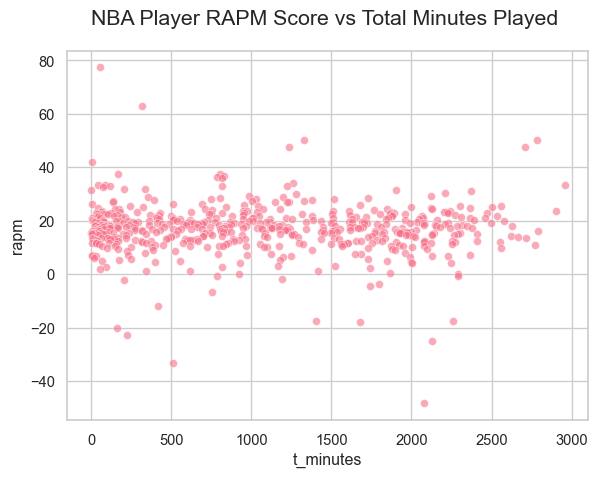
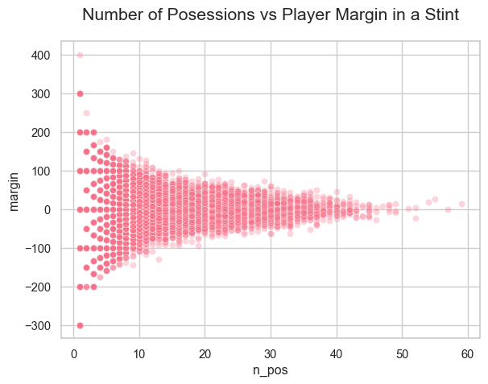
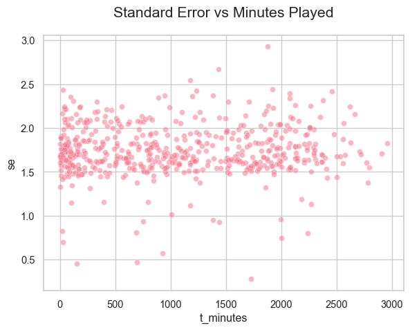

NBA Player Evaluation Using Ridge Regression and the Lasso
DATA622-Lab4
In this lab you are going to be using resampling techniques (cross-validation and the bootstrap) along with regularization (ridge regression and the lasso) to rank basketball players based on their performance during the 2022 NBA season. To get the most out of this lab, you do not need to be an expert on the NBA, but you do need to pay attention to the following background information.
Basketball is a sport played between two teams. Each team has 12 total players, but only 5 are on the court for each team at a given time. The goal of the game is to score more points than the other team during the 48 minutes of game time. Points are scored by “shooting” a ball into a 10 foot tall metal hoop called the “basket”. If you want to watch the gameplay, [skim this video]. Or, you can watch [this 8 minute video that explains the rules].
Traditionally, basketball players have been evaluated based on their individual statistics, such as the number of points that they score in a game, the number of “rebounds” they get (a rebound is when a player catches the ball after a missed shot), the number of “steals” (when a player takes the ball from the other team), and more. However, basketball is a complicated team sport, and the actions of all five players on a team contribute to these individual statistics.
The goal of capturing these more abstract contributions to success has led to the concept of “plus-minus”, which looks at how the presence or absence of a player on the court correlates with the scoring margin of the team. The idea is to model what happens in a basketball game by assigning each player on both teams a “coefficient”, which will be called “RAPM” during this homework assignment. “RAPM” stands for Regularized Adjusted Plus Minus, and it measures the contribution of each player to the expected point differential between the two teams. A player with a RAPM of 3 is expected to add 3 points to their team’s net performance for every 100 possessions of a basketball game (a possession is defined as a period of the game where a single team has control of the ball, games consist of a series of alternating possessions and there are usually about 200 possessions in a game, 100 per team).
Suppose that two teams are playing against each other, and that the ‘lineups’ of the two teams stay the same for a certain number of possessions, call it num_pos. This period of time with constant lineups is called a stint, and we can model the probability distribution for the point “margin”, defined as:
Here, the sum is over all the different players in the dataset, and the coefficient \(c_{ij}\) is +1 if that player \(j\) was on the court during stint \(i\) and playing for the “home” team, and -1 if they were on the court for the “road” team. The coefficient is \(0\) otherwise. The “home” team and “road” team distinction allows us to use the same data for players who were playing against each other. The “margin” variable is the point differential during the stint normalized to points per 100 possessions.
Here you can see that each row corresponds to a stint where the players on the court didn’t change. The n_pos variable is the number of possessions that took place during that stint. The home_points and away_points are the number of points scored by the home and away teams respectively. The minutes describes how long in minutes the stint lasted, and the margin is the target variable (defined earlier). The features in column 7 onwards are labeled by player ids, and the value in each cell corresponds to the \(c_i\) values for that stint (whether the player was on the court for the home team, road team, or neither). You can recover the identity of the players from the [player_id] file.
In the following you will be exploring different ways of calculating the the RAPM model coefficients and interpreting them in terms of player skill.
Problem 1: Ridge Regression for Inference
Ordinary Linear Regression:
Use ordinary linear regression to fit the model described in the overview. Use cross-validation to estimate the out of sample root mean squared error and compare it to the in sample error, you may use RidgeCV with \(alpha=1e-8\) to keep consistency with the rest of the assignment, or use LinearRegression. Make sure fit_intercept=True, the intercept corresponds to the home court advantage, and do not use sample_weight.
Does the difference between in-sample and cross-validated mean squared error suggest a major problem with overfitting?
Prep:
The target (y variable) is $margin and the predictors are the player, everything past column 7.
The in-sample mean squared error was lower than the cross validated. The error is because the predictions come directly from the training datapoints. The values are pretty close to each other, I can’t say there’s an overfitting problem here but by the nature of the in-sample measurement I would always expect it to be lower than the cross validated.
Examining ‘RAPM’ Coefficients:
Create a dataframe with the player-ids, the RAPM coefficients, and join it with the player names (from the data file shared earlier).
Use the stint matrix to calculate the number of minutes that each player played (minutes variable) and add that to the data frame too.
Sort the players in descending order by ‘RAPM’ and print the top 20 players by ‘RAPM’. What do you notice about their minutes played? Look up the names of a few of the top players on the internet- are they regarded as top NBA players?
Make a scatter plot of ‘RAPM’ versus minutes-played.
#--Player id df--players= pd.read_csv("https://raw.githubusercontent.com/georgehagstrom/DATA622Spring2026/refs/heads/main/website/assignments/labs/labData/player_id.csv")#--Model RAPM Coefficients--rapm=dict(zip(players["player_id"].astype(int), m1.coef_))players["rapm"]= players["player_id"].map(rapm)#--Join Stints--#stint matrixstints2= stints.iloc[:,7:]minutes= stints["minutes"].values#-- using absolute value because of the "road" -1s--stints2=abs(stints2).T#--Calculate minutes--players2= (stints2 * stints["minutes"].values).sum(axis=1)players2=players2.to_frame(name="t_minutes")players2.index.name="player_id"players2= players2.reset_index().astype(int)#-- Joining on players--players= players.merge(players2, on="player_id", how="left")players= players.sort_values("rapm", ascending=False)
The player matrix stint x player, transposed, becomes player x stint. In this shape, I could multiply the array of minutes to produce the minutes played per stint.
Player Top 20 Lineup
#-- The players have a headshot and the ID's are real!-- top20=pd.DataFrame(players.head(20))top20= top20.copy()#-- adding the ids to the base url--top20["image_url"]= top20["player_id"].astype(str).apply(lambda x: f"https://cdn.nba.com/headshots/nba/latest/1040x760/{x}.png")header="<h1 style='text-align:center;'>Top 20 by RAPM</h1>"p_cards ="".join(f"<div style='text-align:center;'>"f"<img src='{row.image_url}' style='width:90px;'>"f"<div style= 'font-size:13px;'>{row.player_name}</div>"f"<div style= 'font-size:12px;'>RAPM: {row.rapm:.3f}</div>"f"<div style= 'font-size:12px;'>Play Time: {row.t_minutes}</div>"f"</div>"for player, row in top20.iterrows())HTML(f"<div style='display:grid;grid-template-columns:repeat(5,1fr); gap:8px;'>{p_cards}</div>")
Gabe York
RAPM: 77.399
Play Time: 53
Theo Pinson
RAPM: 62.877
Play Time: 316
Zach LaVine
RAPM: 50.272
Play Time: 2783
Isaiah Stewart
RAPM: 50.138
Play Time: 1332
Delon Wright
RAPM: 47.435
Play Time: 1234
Trae Young
RAPM: 47.427
Play Time: 2706
Chris Silva
RAPM: 41.990
Play Time: 7
Nikola Jovic
RAPM: 37.628
Play Time: 167
Jericho Sims
RAPM: 37.509
Play Time: 802
Danuel House Jr.
RAPM: 36.865
Play Time: 830
James Wiseman
RAPM: 36.223
Play Time: 785
Mark Williams
RAPM: 36.063
Play Time: 816
Jeremy Sochan
RAPM: 34.273
Play Time: 1263
Julius Randle
RAPM: 33.438
Play Time: 2956
Joe Wieskamp
RAPM: 33.412
Play Time: 41
Jaden Springer
RAPM: 33.313
Play Time: 89
Andre Iguodala
RAPM: 33.030
Play Time: 116
Bryce McGowens
RAPM: 33.015
Play Time: 820
Aaron Wiggins
RAPM: 32.954
Play Time: 1221
Omer Yurtseven
RAPM: 32.606
Play Time: 76
I’m not familiar with the NBA, but I can accurately say Lebron James is not in this lineup.
#-- fixing sns--sns.set_theme(style="whitegrid", palette="husl")plt.rcParams["axes.titlesize"] =16plt.rcParams["axes.titlepad"] =20#-- Visualize RAPM--sns.scatterplot(data= players, x="t_minutes", y="rapm", alpha=0.6)plt.title("NBA Player RAPM Score vs Total Minutes Played ")plt.show()

The scatterplot shows the linear relationship between rapm and t_minutes is basically zero.
Ridge Regression RAPM:
The results of (b) suggest that the model is attaching extreme values of RAPM to low minute players, something which can be potentially fixed with regularization. Define a vector of regularization parameters alpha on a logarithmic scale between \(10^{-2}\) and \(10^{5}\) (look up np.logspace).
Make this vector contain at least 10 but not more than 200 values of alpha (pick based on how fast your computer is). Use RidgeCV to fit a ridge regression model, selecting the model with the best value of the hyperparameters.
What value of alpha is optimal? Next, repeat the same calculation as you did in part (b) (you could create a function or just copy the dataframe and replace the old RAPM with new RAPM). Look up some of the top players that your model identified, are they well regarded by the NBA?
In a Jupyter environment, please rerun this cell to show the HTML representation or trust the notebook. On GitHub, the HTML representation is unable to render, please try loading this page with nbviewer.org.
print(f"Optimal Value of alpha: {m2.alpha_.round(2)}")
Optimal Value of alpha: 719.69
Model 2 Player Top 20 Lineup
#--pulling the ridge values--rapm2=dict(zip(players["player_id"].astype(int), m2.coef_))players["rapm2"]= players["player_id"].map(rapm2)players= players.sort_values("rapm2", ascending=False)top20=pd.DataFrame(players.head(20))top20= top20.copy()#-- adding the ids to the base url--top20["image_url"]= top20["player_id"].astype(str).apply(lambda x: f"https://cdn.nba.com/headshots/nba/latest/1040x760/{x}.png")header="<h1 style='text-align:center;'>Model 2: Top 20 by RAPM</h1>"p_cards ="".join(f"<div style='text-align:center;'>"f"<img src='{row.image_url}' style='width:90px;'>"f"<div style= 'font-size:13px;'>{row.player_name}</div>"f"<div style= 'font-size:12px;'>RAPM: {row.rapm:.3f}</div>"f"<div style= 'font-size:12px;'>Play Time: {row.t_minutes}</div>"f"</div>"for player, row in top20.iterrows())HTML(f"<div style='display:grid;grid-template-columns:repeat(5,1fr); gap:8px;'>{p_cards}</div>")
Chuma Okeke
RAPM: 20.186
Play Time: 513
Clint Capela
RAPM: 17.488
Play Time: 1696
Cam Reddish
RAPM: 25.959
Play Time: 957
Keita Bates-Diop
RAPM: 22.533
Play Time: 1318
Tyrese Maxey
RAPM: 15.730
Play Time: 2000
Collin Sexton
RAPM: 18.557
Play Time: 1192
Zach LaVine
RAPM: 50.272
Play Time: 2783
Brook Lopez
RAPM: 17.932
Play Time: 2156
George Hill
RAPM: 12.324
Play Time: 892
Jalen Green
RAPM: 19.790
Play Time: 2575
Kevin Love
RAPM: 17.168
Play Time: 1131
Rui Hachimura
RAPM: 16.168
Play Time: 1504
Andre Iguodala
RAPM: 33.030
Play Time: 116
Jock Landale
RAPM: 12.645
Play Time: 921
Jeff Dowtin Jr.
RAPM: 18.560
Play Time: 238
Nathan Knight
RAPM: 12.343
Play Time: 312
Justin Champagnie
RAPM: 15.293
Play Time: 22
Malachi Flynn
RAPM: 17.779
Play Time: 658
Malik Monk
RAPM: 17.434
Play Time: 1678
OG Anunoby
RAPM: 18.141
Play Time: 2287
Problem 2: Possession Weights
Heteroscedasticity in Stints:
Make a plot of the margin variable as a function of the number of possessions in a stint. What do you notice about the variance of margin? Why do you think it is happening?
The plot below is a funnel shape, it goes from wide variance to low variance. It seems symmetrical if sliced at zero. It is an example pf heteroscedasticity as the variance is not constant but seems to have a pattern.
sns.scatterplot(data=stints, x="n_pos", y="margin", alpha=0.3)plt.title("Number of Posessions vs Player Margin in a Stint")plt.show()

Implementing Weights Regression:
The solution to the issue that you observed in 2(a) is something called weighted least squares This involves adjusting the error term for each stint, based on a weight that accounts for whatever factor controls the variance.
where \(w_i\) is a coefficient that determines how the variance of margin should scale for each stint. The idea is that \(w_i\) should be smaller for stints where the variance is high, and larger for stints where the variance is low. This forces the model to fit the low-variance stints more closely than the high-variance stints. The correct weights for this problem are the \(w_i = \mathrm{num\_pos}_i\), which implies that the variance of the margin is inversely proportional to the number of stints.
Verify this by making a scatter plot of the margin rate times the square root of the number of possessions versus the number of possessions.
Then recalculate the player RAPM coefficients from 1(c) by setting the weights keyword in the model fit to be n_pos. How have the rankings of top players changed?
Scatterplot for Scaled Margin
stints["correction"]= stints["margin"] * np.sqrt(stints["n_pos"])sns.scatterplot(data=stints, x="n_pos", y="correction", alpha=0.3)plt.title("Number of Posessions vs Player Margin (scaled) in a Stint")plt.ylabel("Margin Rate x sqrt(Number of Posessions)")plt.show()
#-- adding the ids to the base url p3--top20["image_url"]= top20["player_id"].astype(str).apply(lambda x: f"https://cdn.nba.com/headshots/nba/latest/1040x760/{x}.png")header="<h1 style='text-align:center;'>Model 3: Top 20 by RAPM</h1>"p_cards ="".join(f"<div style='text-align:center;'>"f"<img src='{row.image_url}' style='width:90px;'>"f"<div style= 'font-size:13px;'>{row.player_name}</div>"f"<div style= 'font-size:12px;'>RAPM: {row.rapm:.3f}</div>"f"<div style= 'font-size:12px;'>Play Time: {row.t_minutes}</div>"f"</div>"for player, row in top20.iterrows())HTML(f"<div style='display:grid;grid-template-columns:repeat(5,1fr); gap:8px;'>{p_cards}</div>")
Alex Caruso
RAPM: 16.580
Play Time: 1615
Cam Reddish
RAPM: 25.959
Play Time: 957
Dorian Finney-Smith
RAPM: 15.531
Play Time: 1930
Buddy Boeheim
RAPM: 16.712
Play Time: 82
Neemias Queta
RAPM: 6.748
Play Time: 31
Grant Williams
RAPM: 24.754
Play Time: 2123
Lamar Stevens
RAPM: 14.419
Play Time: 1078
Daishen Nix
RAPM: 18.857
Play Time: 871
Tyrese Haliburton
RAPM: 4.981
Play Time: 1849
Kenrich Williams
RAPM: 5.401
Play Time: 1176
Cameron Johnson
RAPM: 24.515
Play Time: 1073
Justin Champagnie
RAPM: 15.293
Play Time: 22
Onyeka Okongwu
RAPM: 9.940
Play Time: 1726
Josh Green
RAPM: 15.252
Play Time: 1454
Nathan Knight
RAPM: 12.343
Play Time: 312
Troy Brown Jr.
RAPM: 10.521
Play Time: 1869
Franz Wagner
RAPM: -0.840
Play Time: 2293
Jason Preston
RAPM: 12.996
Play Time: 115
Naz Reid
RAPM: 14.826
Play Time: 1265
Jamal Cain
RAPM: 17.779
Play Time: 263
Problem 3: Interpreting Bootstrap Uncertainty
Calculate Confidence Intervals Using the Bootstrap:
Suppose you are a general manager for a basketball team. You want to identify candidate players to add to your team, but you are unsure how certain to be about the ‘RAPM’ coefficients for the model. The bootstrap is a standard approach for calculating confidence intervals for model coefficients.
Use either the resample function from sklearn or np.random.choice along with a loop to calculate bootstrap samples of the model coefficients for each player. You may use the optimal alpha found during the hyperparameter search in 2(b) for all bootstrap fits.
Do not forget to resample the weights when bootstrapping!
For the top 20 players, display the RAPM estimates along with the confidence interval (calculate 92% intervals or some other high value that isn’t 95%). How much do the intervals of the top 20 overlap?
#--matching the Player IDs--rapm4=dict(zip(players["player_id"].astype(int), m4.coef_))cil_map=dict(zip(players["player_id"].astype(int), np.percentile(boot, 4, axis=0)))ciu_map=dict(zip(players["player_id"].astype(int), np.percentile(boot, 96, axis=0)))#-- Adding the Cisplayers= players.copy()players["rapm4"]= players["player_id"].map(rapm4)players["ci_lower"]= players["player_id"].map(cil_map)players["ci_upper"]= players["player_id"].map(ciu_map)players= players.sort_values("rapm4", ascending=False)top20= players.head(20).copy()top20["ci_range"]= top20["ci_upper"]-top20["ci_lower"]
Model 4 Player Top 20 Lineup
#-- adding the ids to the base url p3--top20["image_url"]= top20["player_id"].astype(str).apply(lambda x: f"https://cdn.nba.com/headshots/nba/latest/1040x760/{x}.png")header="<h1 style='text-align:center;'>Model 4: Top 20 by RAPM (after Bootstrapping)</h1>"p_cards ="".join(f"<div style='text-align:center;'>"f"<img src='{row.image_url}' style='width:90px;'>"f"<div style= 'font-size:14px; font-weight: bold'>{row.player_name}</div>"f"<div style= 'font-size:12px;'>RAPM: {row.rapm:.3f}</div>"f"<div style= 'font-size:12px;'>CI Lower: {row.ci_lower:.3f}</div>"f"<div style= 'font-size:12px;'>CI Upper: {row.ci_upper:.3f}</div>"f"<div style= 'font-size:14px; font-weight: bold'>CI Range:{row.ci_range:.3f}</div>"f"</div>"for player, row in top20.iterrows())HTML(f"<div style='display:grid;grid-template-columns:repeat(5,1fr); gap:8px;'>{p_cards}</div>")
Isaiah Jackson
RAPM: 21.908
CI Lower: 3.736
CI Upper: 9.120
CI Range:5.384
Chris Silva
RAPM: 41.990
CI Lower: 1.077
CI Upper: 7.256
CI Range:6.179
Ben Simmons
RAPM: 13.133
CI Lower: 0.845
CI Upper: 7.430
CI Range:6.584
Michael Carter-Williams
RAPM: 17.582
CI Lower: 0.268
CI Upper: 8.393
CI Range:8.125
Malcolm Hill
RAPM: 16.046
CI Lower: -0.797
CI Upper: 5.636
CI Range:6.432
Dorian Finney-Smith
RAPM: 15.531
CI Lower: 3.033
CI Upper: 9.042
CI Range:6.008
Andre Drummond
RAPM: 14.316
CI Lower: 0.364
CI Upper: 6.540
CI Range:6.176
John Butler Jr.
RAPM: 14.713
CI Lower: 2.246
CI Upper: 9.341
CI Range:7.095
Jeff Dowtin Jr.
RAPM: 18.560
CI Lower: 0.248
CI Upper: 5.974
CI Range:5.726
Maxi Kleber
RAPM: 19.690
CI Lower: -0.026
CI Upper: 5.108
CI Range:5.135
Nerlens Noel
RAPM: 17.478
CI Lower: 4.144
CI Upper: 10.484
CI Range:6.339
Josh Richardson
RAPM: 17.566
CI Lower: -1.015
CI Upper: 4.901
CI Range:5.915
Wendell Moore Jr.
RAPM: 24.246
CI Lower: -0.447
CI Upper: 5.418
CI Range:5.865
Caris LeVert
RAPM: 23.537
CI Lower: -1.136
CI Upper: 4.758
CI Range:5.894
Ziaire Williams
RAPM: -33.240
CI Lower: -0.430
CI Upper: 5.512
CI Range:5.942
Malcolm Brogdon
RAPM: 15.877
CI Lower: 0.372
CI Upper: 6.117
CI Range:5.745
RJ Barrett
RAPM: 12.146
CI Lower: 0.743
CI Upper: 6.032
CI Range:5.289
Kevon Harris
RAPM: 14.839
CI Lower: -0.985
CI Upper: 5.404
CI Range:6.389
Luke Kornet
RAPM: 10.554
CI Lower: -3.306
CI Upper: 5.106
CI Range:8.412
Duncan Robinson
RAPM: 12.284
CI Lower: 0.575
CI Upper: 6.354
CI Range:5.778
There is an overlap here in the Top 20
Impact of Minutes Played on Confidence Intervals:
One potential use of a model like this is to find players who do not play much but who might do well with more opportunity. Calculate the standard errors of each coefficient from the bootstrap samples and make a scatterplot of standard error versus minutes played.
Comment on the relationship between minutes played and standard error- does it make sense to you intuitively and/or statistically?
players["se"]=np.std(boot, axis=0)
sns.scatterplot(data=players, x="t_minutes", y="se", alpha=0.5)plt.title("Standard Error vs Minutes Played")plt.show()

The plot is not as dramatic as the funnel earlier but there is still many differences in variation on t_minues so there is heteroscaticity here. The relationship between se and t_minutes is not strong, but with the alpha at 0.4 I can notice that the points that overlap have a little curve. Maybe theres a nonlinear relationship? I’m not sure.
Comparison to Bayesian Credible Intervals:
Bayesian statistics (which you should have learned about briefly in DATA 606) is a field of statistics based on an interpretation of probability as referring to uncertainty about the real world rather than as the frequency of outcomes in repeated experiments. In the Bayesian framework, it is normal to talk about the probability distribution of model parameters, which leads to the concept of a credible interval, defined as an interval with a certain probability of containing the model parameter (a 92% credible interval would have a 92% chance of containing the model parameter). Credible intervals often correspond closely to confidence intervals captured using standard statistics, but this problem is one case where they diverge sharply.
Ridge regression has an interpretation in Bayesian statistics, where the regularization parameter corresponds to the strength of a prior belief that the model coefficients have a normal distribution centered around zero and with variance inversely proportional to the regularization penalty \(\alpha\).
For ridge regression interpreted as Bayesian statistics, there is an exact formula for the standard errors and confidence intervals which we can use to contrast with the bootstrap estimate. I have provided code below to calculate the standard errors and the Bayesian credible intervals (if you are curious about the full details [read this article].
Use the code below and calculate the Bayesian standard errors for each ‘RAPM’ coefficient. Make a plot of the Bayesian standard errors versus minutes played and compare to the standard errors calculated from the bootstrap. In which part of the range is the agreement highest? In which part is the disagreement highest? Focusing on the areas where the disagreement is highest, put yourself in the shoes of someone using the model and discuss which estimate of uncertainty is more realistic and why.
(You will need to adapt the code below to your variable names and data structures.)
Code to calculate standard errors and Bayesian credible intervals
# Here MarginVector is your Target# StintMatrix are your observations# WeightVector are your weights# model_ridge is your selected model# alpha_opt is the optimal regularization parameter from cross validationmodel_ridge= m4weights = stints["n_pos"].values # Need to do this is WeightVector is a pandas series or df etcstint_mat = stints2 # Dittomargin_vec = stints["margin"].values # Dittovar = np.average((margin_vec - model_ridge.predict(stint_mat))**2, weights=weights) # We need to incorporate weights into variance calculationnum_players = stints2.shape[1]AMat = (stints2 * weights.reshape(-1, 1)).T @ stints2 + alpha_opt * np.eye(num_players)# This is the covariance matrix. You could find very high covariance between players on the same teamsposterior_covariance = var * np.linalg.inv(AMat) se_vec = np.sqrt(np.diag(posterior_covariance)) # These are the standard errors
Conclusion
Extra Credit (5 Points): Ridge versus Lasso and Confidence/Credible Interval Calculations
An alternative to ridge regression that is used for variable selection is called the Lasso. The Lasso differs penalty causes a large number of model coefficients to be zero, making it a good tool for variable selection and for creating interpretable models.
Use LassoCV to calculate the RAPM coefficients. I recommend using regularization weights that range between \(10^{-4}\) and \(10^2\) (the scale needs to be different compared to ridge regression).
Compare the RAPM values calculated with lasso to those calculated with ridge regression. Are there any notable differences in the top 20 players?
Find the 10 players with the largest difference between lasso RAPM and Ridge RAPM in both directions (ridge greater than lasso and lasso greater than ridge). Within the players where there was large disagreement, consider how the players performed in the next NBA season (you may do this however you like, I recommend reading media reports about those players during the next season) and determine which model was more correct when it comes to players with large disagreements.
There is a subtle conceptual flaw in how the confidence or credible intervals were calculated in this lab. This is apparent if you paid very close attention during the meetup. Can you tell me what it is?
The conceptual flaw in how the confidence intervals were calculated might be that there is a bottleneck in the amount of players that can be on the court. Confidence intervals are percentages indicating where an observation falls. There is a cap the probability of being on the court and i dont think that is accounted for here.